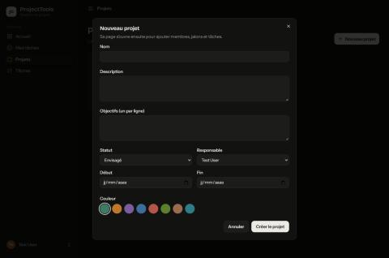
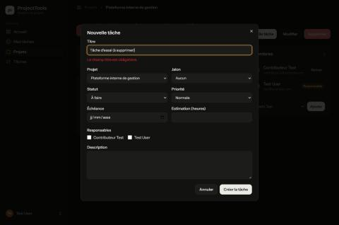
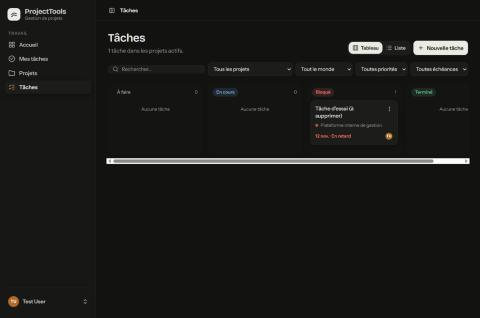
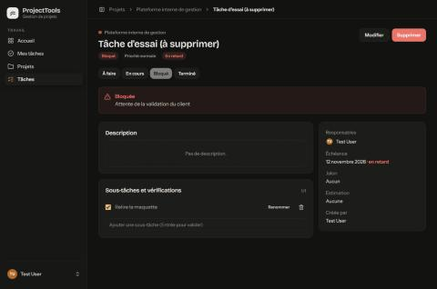

Branche locale
lot1/travail,
partie de main sur
GitHub. Rien n'est poussé.
| Ticket | État | Ce qu'on voit |
|---|---|---|
| Norme modale + statuts réglables | Fait | « Nouveau projet » et « Nouvelle tâche » s'ouvrent en modale. Paramètres › Statuts des projets / des tâches : ajouter, renommer, colorer, réordonner, supprimer avec remplacement. |
| 01 · Jalons | Fait | Section Jalons sur la page projet, « x / y atteints », « Dépassé ». |
| 02 · Module Tâches | Fait | 5 permissions dans la matrice, visibilité par projet. |
| 03 · Créer, voir, modifier | Fait | Page tâche, boutons de statut, raison du blocage, page Modifier. |
| 04 · Liste et filtres | Fait | Menu « Tâches », filtres dans l'adresse, recherche, pagination. |
| 05 · Kanban | Fait | Une colonne par statut, glisser-déposer et menu « Déplacer vers… ». |
| 06 · Sous-tâches | Fait | Cases à cocher, « 2/5 » sur la page, la liste et les cartes. |
| 10 · Mes tâches | Fait | Groupes par urgence, case pour terminer, « Ma charge ». |
| 07 · 08 · Commentaires | Stagiaire |
En correction (voir
documentation/retours/).
|
| 09 · 11 à 15 | En attente | Cloche, accueil, calendrier, page projet complète, archivage. |
composer test, avec Pint et PHPStan niveau 7 sans erreur). Types
TypeScript (vue-tsc) sans erreur.




composer ci:check s'arrête au contrôle de
format
à cause de 3 fichiers d'essai qui ne viennent pas de moi :
demo.md et test.md (déjà sur
main dans GitHub, donc la CI de
main est rouge aussi) et
docs/tickets/ranja/01-test.md (non suivi). Tant
qu'ils restent, la vérification GitHub ne passera pas.
C:\Users\USER\AppData\Local\Temp\claude\b2ae2947e83e7eb0\37086dd2-cd88-49fd-9c46-04cf76040734\scratchpad\database-avant-lot1.sqlite.
main locale contient
toujours le commit non validé du stagiaire (comme tu
l'as demandé). Ma branche part de GitHub, sans lui.